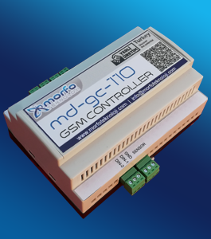

-
Uzaktan GSM Kontrol Cihazı

Bu cihaz üzerindeki dijital giriş ile röle çıkış bulunan ve GSM şebekesi üzerinden sms komutları ya da arama ile kontrol edebilmenizi sağlar. Ayrıca dijital girişi üzerinden sms alarmı alabilirsiniz. Harici olarak cep telefonu bağlanması gerekmez. Sim kart doğrudan cihaza takılır. Kontrol işlemlerini yaparken sisteme olan uzaklığınızın hiçbir önemi yoktur. GSM şebekesinin çektiği dünyanın her yerinden kontrol işlemini yapabilirsiniz. Şifreli haberleşme özelliği sayesinde güvenli kontrol sağlar. Cihazın elektronik kart tasarımı, yazılımı ve üretimini Türkiye’ de kendimiz yapmaktayız.